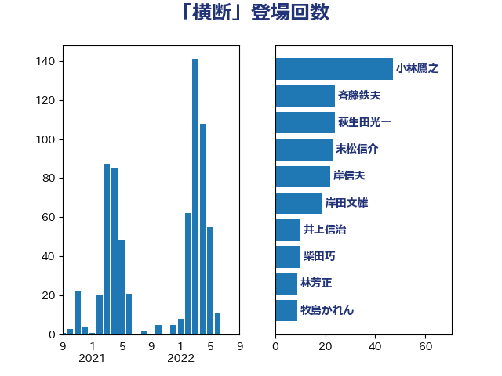

単語「横断」

| 小林鷹之 | 自由民主党 | 47 回 |
| 斉藤鉄夫 | 公明党 | 24 回 |
| 萩生田光一 | 自由民主党 | 24 回 |
| 末松信介 | 自由民主党 | 23 回 |
| 岸信夫 | 自由民主党 | 22 回 |
| 岸田文雄 | 自由民主党 | 19 回 |
| 井上信治 | 自由民主党 | 10 回 |
| 柴田巧 | 日本維新の会 | 10 回 |
| 林芳正 | 自由民主党 | 9 回 |
| 牧島かれん | 自由民主党 | 9 回 |
| 加藤勝信 | 自由民主党 | 7 回 |
| 西銘恒三郎 | 自由民主党 | 6 回 |
| 野上浩太郎 | 自由民主党 | 6 回 |
| 野田聖子 | 自由民主党 | 6 回 |
| 浅田均 | 日本維新の会 | 5 回 |
| 田島麻衣子 | 立憲民主党 | 5 回 |
| 緑川貴士 | 立憲民主党 | 5 回 |
| 上田清司 | 国民民主党 | 4 回 |
| 中谷一馬 | 立憲民主党 | 4 回 |
| 伊藤俊輔 | 立憲民主党 | 4 回 |
| 坂本哲志 | 自由民主党 | 4 回 |
| 矢倉克夫 | 公明党 | 4 回 |
| 菅義偉 | 自由民主党 | 4 回 |
| 赤羽一嘉 | 公明党 | 4 回 |
| 鈴木貴子 | 自由民主党 | 4 回 |
| 三浦信祐 | 公明党 | 3 回 |
| 上野通子 | 自由民主党 | 3 回 |
| 吉田統彦 | 立憲民主党 | 3 回 |
| 土屋品子 | 自由民主党 | 3 回 |
| 小泉進次郎 | 自由民主党 | 3 回 |
| 枝野幸男 | 立憲民主党 | 3 回 |
| 片山大介 | 日本維新の会 | 3 回 |
| 礒崎哲史 | 国民民主党 | 3 回 |
| 進藤金日子 | 自由民主党 | 3 回 |
| 青木愛 | 立憲民主党 | 3 回 |
| 中司宏 | 日本維新の会 | 2 回 |
| 中西祐介 | 自由民主党 | 2 回 |
| 井上哲士 | 日本共産党 | 2 回 |
| 佐藤茂樹 | 公明党 | 2 回 |
| 国光あやの | 自由民主党 | 2 回 |
| 太田房江 | 自由民主党 | 2 回 |
| 小沼巧 | 立憲民主党 | 2 回 |
| 岸真紀子 | 立憲民主党 | 2 回 |
| 川田龍平 | 立憲民主党 | 2 回 |
| 平井卓也 | 自由民主党 | 2 回 |
| 朝日健太郎 | 自由民主党 | 2 回 |
| 武田良太 | 自由民主党 | 2 回 |
| 田村智子 | 日本共産党 | 2 回 |
| 白石洋一 | 立憲民主党 | 2 回 |
| 石井章 | 日本維新の会 | 2 回 |
| 笹川博義 | 自由民主党 | 2 回 |
| 若宮健嗣 | 自由民主党 | 2 回 |
| 茂木敏充 | 自由民主党 | 2 回 |
| 赤嶺政賢 | 日本共産党 | 2 回 |
| 足立康史 | 日本維新の会 | 2 回 |
| 里見隆治 | 公明党 | 2 回 |
| 音喜多駿 | 日本維新の会 | 2 回 |
| 高橋はるみ | 自由民主党 | 2 回 |
| 高橋光男 | 公明党 | 2 回 |
| たがや亮 | れいわ新選組 | 1 回 |
| 三浦靖 | 自由民主党 | 1 回 |
| 上川陽子 | 自由民主党 | 1 回 |
| 下条みつ | 立憲民主党 | 1 回 |
| 中山展宏 | 自由民主党 | 1 回 |
| 中川郁子 | 自由民主党 | 1 回 |
| 中曽根康隆 | 自由民主党 | 1 回 |
| 中野英幸 | 自由民主党 | 1 回 |
| 五十嵐清 | 自由民主党 | 1 回 |
| 井野俊郎 | 自由民主党 | 1 回 |
| 今井絵理子 | 自由民主党 | 1 回 |
| 伊佐進一 | 公明党 | 1 回 |
| 佐々木さやか | 公明党 | 1 回 |
| 勝部賢志 | 立憲民主党 | 1 回 |
| 北村経夫 | 自由民主党 | 1 回 |
| 古川元久 | 国民民主党 | 1 回 |
| 古川直季 | 自由民主党 | 1 回 |
| 古川禎久 | 自由民主党 | 1 回 |
| 古賀之士 | 立憲民主党 | 1 回 |
| 吉川ゆうみ | 自由民主党 | 1 回 |
| 吉川赳 | 無所属 | 1 回 |
| 吉田とも代 | 日本維新の会 | 1 回 |
| 吉田豊史 | 日本維新の会 | 1 回 |
| 吉良よし子 | 日本共産党 | 1 回 |
| 和田義明 | 自由民主党 | 1 回 |
| 堀内詔子 | 自由民主党 | 1 回 |
| 塩川鉄也 | 日本共産党 | 1 回 |
| 大塚拓 | 自由民主党 | 1 回 |
| 大塚耕平 | 国民民主党 | 1 回 |
| 大島敦 | 立憲民主党 | 1 回 |
| 寺田静 | 無所属 | 1 回 |
| 小宮山泰子 | 立憲民主党 | 1 回 |
| 小林史明 | 自由民主党 | 1 回 |
| 小森卓郎 | 自由民主党 | 1 回 |
| 小西洋之 | 立憲民主党 | 1 回 |
| 尾身朝子 | 自由民主党 | 1 回 |
| 山崎正恭 | 公明党 | 1 回 |
| 山本剛正 | 日本維新の会 | 1 回 |
| 山本博司 | 公明党 | 1 回 |
| 岡本三成 | 公明党 | 1 回 |
| 岩渕友 | 日本共産党 | 1 回 |
| 岩田和親 | 自由民主党 | 1 回 |
| 平将明 | 自由民主党 | 1 回 |
| 打越さく良 | 立憲民主党 | 1 回 |
| 掘井健智 | 日本維新の会 | 1 回 |
| 本田太郎 | 自由民主党 | 1 回 |
| 杉尾秀哉 | 立憲民主党 | 1 回 |
| 松沢成文 | 日本維新の会 | 1 回 |
| 松野博一 | 自由民主党 | 1 回 |
| 梶山弘志 | 自由民主党 | 1 回 |
| 森屋隆 | 立憲民主党 | 1 回 |
| 櫻井周 | 立憲民主党 | 1 回 |
| 武見敬三 | 自由民主党 | 1 回 |
| 武部新 | 自由民主党 | 1 回 |
| 池下卓 | 日本維新の会 | 1 回 |
| 池田佳隆 | 自由民主党 | 1 回 |
| 河西宏一 | 公明党 | 1 回 |
| 河野太郎 | 自由民主党 | 1 回 |
| 津島淳 | 自由民主党 | 1 回 |
| 浜野喜史 | 国民民主党 | 1 回 |
| 清水貴之 | 日本維新の会 | 1 回 |
| 片山さつき | 自由民主党 | 1 回 |
| 猪口邦子 | 自由民主党 | 1 回 |
| 田中英之 | 自由民主党 | 1 回 |
| 田村憲久 | 自由民主党 | 1 回 |
| 田野瀬太道 | 無所属 | 1 回 |
| 石川博崇 | 公明党 | 1 回 |
| 石川大我 | 立憲民主党 | 1 回 |
| 神谷裕 | 立憲民主党 | 1 回 |
| 福島みずほ | 社会民主党 | 1 回 |
| 福島伸享 | 無所属 | 1 回 |
| 稲富修二 | 立憲民主党 | 1 回 |
| 空本誠喜 | 日本維新の会 | 1 回 |
| 竹内譲 | 公明党 | 1 回 |
| 竹谷とし子 | 公明党 | 1 回 |
| 細田健一 | 自由民主党 | 1 回 |
| 美延映夫 | 日本維新の会 | 1 回 |
| 荒井優 | 立憲民主党 | 1 回 |
| 葉梨康弘 | 自由民主党 | 1 回 |
| 藤木眞也 | 自由民主党 | 1 回 |
| 藤田文武 | 日本維新の会 | 1 回 |
| 西村康稔 | 自由民主党 | 1 回 |
| 西田実仁 | 公明党 | 1 回 |
| 角田秀穂 | 公明党 | 1 回 |
| 谷合正明 | 公明党 | 1 回 |
| 赤木正幸 | 日本維新の会 | 1 回 |
| 足立敏之 | 自由民主党 | 1 回 |
| 輿水恵一 | 公明党 | 1 回 |
| 近藤和也 | 立憲民主党 | 1 回 |
| 道下大樹 | 立憲民主党 | 1 回 |
| 重徳和彦 | 立憲民主党 | 1 回 |
| 金子恭之 | 自由民主党 | 1 回 |
| 鈴木庸介 | 立憲民主党 | 1 回 |
| 鈴木敦 | 国民民主党 | 1 回 |
| 鈴木英敬 | 自由民主党 | 1 回 |
| 鎌田さゆり | 立憲民主党 | 1 回 |
| 長坂康正 | 自由民主党 | 1 回 |
| 阿部司 | 日本維新の会 | 1 回 |
| 高木かおり | 日本維新の会 | 1 回 |
| 高橋千鶴子 | 日本共産党 | 1 回 |
| 高良鉄美 | 無所属 | 1 回 |
| 鬼木誠 | 立憲民主党 | 1 回 |